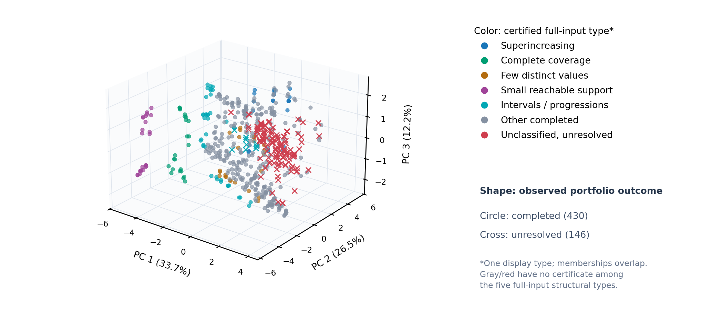

Why Unresolved Inputs Cluster: A Structural and Statistical Account
The subset-sum plot suggests a geography: several routes into easy solving, a concentration of unsuccessful runs, and a mixed boundary. In the original 15-feature space, 80.27% of the five nearest neighbors of unresolved inputs are also unresolved, against 25.35% unresolved overall. This note explains what our formalism contributes to that observation. Structural guarantees identify several affordable solving regions; a probability identity explains how uneven local failure rates produce neighbor enrichment. Neither argument proves that the observed concentration is inevitable or intrinsic to subset sum.
The object being mapped
An instance is \(x=(w,t)\), with positive integer weights and a fixed target. Fix an exact portfolio \(A\), its schedule and resource caps, and its declared work allowance \(B(L_x)=8L_x\), where \(L_x\) is encoded input length. Define \[H_A(x)=\mathbf 1\{A\text{ leaves }x\text{ unresolved under these limits}\}.\] Unresolved means that the run did not establish either YES or NO before reaching a limit. It says neither that no subset exists nor that another method would fail. The work units are those of the reference implementation, not uniform bit operations.
Our coordinates are \[z(x)=S\bigl(k_1(x),\ldots,k_5(x),c_1(x),\ldots,c_{10}(x)\bigr).\] The five \(k_i\) are deletion counts on an exactly reduced, target-dependent kernel: superincreasing structure, complete coverage, few values, small reachable support, and compact interval/progression representations. Three counts are exact minima under their definitions; two are constructive upper bounds. The ten \(c_j\) describe size, encoding, weight magnitudes and target position. \(S\) is the saved plot standardization. Thus the geometry records particular structural and numerical similarities, rather than distance between raw lists.
Several routes to an affordable exact decision
Suppose extractor \(i\) leaves a certified core and \(k_i\) exceptional items. Enumerating the \(2^{k_i}\) exceptional selections and querying the core for the residual target gives \[T_{C_i}(x)\le F_i(L_x)+2^{k_i(x)}\bigl(Q_i(L_x)+\operatorname{poly}(L_x)\bigr)=:U_i(x). \tag{1}\] Here \(F_i\) includes reduction and extraction; \(Q_i\) includes exact core membership and witness recovery. This is the sufficient-condition argument of Notes V–VI. If these costs are polynomial and \(k_i=O(\log L_x)\), the resulting method is polynomial on that family. At a finite budget, one affordable route suffices: \[\mathcal E_B^{\rm core}=\bigcup_{i=1}^{5}\{x:U_i(x)\le B(L_x)\}. \tag{2}\] All costs in this comparison must use the same accounting. The reference portfolio does not implement every \(C_i\), so membership in this union is not a completion guarantee for \(A\). Outside the union, \(U_i(x)>B(L_x)\) for every \(i\): our five bounds provide no affordable route, but supply no hardness lower bound. This is a plausible mechanism for a shared region of solver resistance, not a proof that the observed labels must cluster.
The observed geography

Figure 1. Frozen inputs in the saved three-dimensional PCA projection of the 15 standardized features; 72.4% of feature variance is retained. Positions were computed without outcome labels. Colors show one full-input structural type, while shape preserves observed completion. The neighborhood statistic below uses the full 15-dimensional geometry, not distances read from this image.
The figure contains 576 original-encoding target cases from 144 base weight lists, including 430 completions and 146 unresolved runs. To prevent the four targets of one list from supplying their own neighbors, each query excludes its entire base list. For each remaining list, choose its nearest target in Euclidean feature distance, then take the nearest five distinct lists. Ties use frozen target order and then lexicographic list ID.
Writing \(N_5(i)\) for those five neighbors and \(H_i=H_A(x_i)\), the measured fraction is \[\widehat Q_H= \frac{\sum_{i:H_i=1}\sum_{j\in N_5(i)}H_j}{5\sum_i H_i} =\frac{586}{730}=80.27\%, \qquad \widehat p=\frac{146}{576}=25.35\%. \tag{3}\] The neighborhood rate is 3.17 times the overall rate. This is enrichment: unresolved runs are more common near unresolved runs than across the sample. Repeating the construction in the 3D projection gives 80.41%; the similar full-space result shows that the concentration is not solely a projection effect. Nevertheless, 56 of the 146 unresolved inputs have at least one completed neighbor in the original space. The boundary is mixed.
| Full-input membership in the five certified types | Completed | Unresolved |
|---|---|---|
| At least one certificate | 135 | 9 |
| None of these certificates | 295 | 137 |
The 295 other completions show that these five full-input classes do not exhaust practical easiness. The nine certified-but-unresolved cases show that structural tractability and this portfolio’s behavior are different objects. These memberships concern the full list; the model’s five distances concern the reduced kernel. Their distinction is intentional.
Why uneven local difficulty produces enrichment
Fix an input distribution \(\mathcal D\) and let \(Z=z(X)\). Define \[q(z)=\Pr_{X\sim\mathcal D}(H_A(X)=1\mid Z=z), \qquad p=\mathbb E[q(Z)]>0.\] The conditional probability averages over information absent from our features. It is not randomness in the answer to a fixed subset-sum instance. Our structural story suggests that \(q\) can vary across feature space: different locations preserve different combinations of affordable shortcuts. The bound alone does not establish this variation or local smoothness.
An ideal local-pair identity. Draw \(Z\) from its population distribution, then draw two inputs independently conditional on \(Z\), with failure labels \(H,H'\). Conditional independence gives \(\mathbb E[HH'\mid Z]=q(Z)^2\), hence \[\Pr(H'=1\mid H=1) =\frac{\mathbb E[q(Z)^2]}p =\boxed{p+\frac{\operatorname{Var}(q(Z))}{p}}. \tag{4}\] If every location has the same failure probability, the variance vanishes and conditioning on one failure does not enrich the other. When local probabilities differ, observing a failure preferentially selects locations with larger \(q\); a second input from that location is consequently more likely to fail. This elementary identity explains the mechanism without asserting that nearby inputs always share a label.
The actual five-neighbor graph uses finite distances and dependent observations. Equation (4) is therefore an idealization, not an exact model of its 80% rate. For an exact finite-sample statement, choose a query index \(I\) uniformly and then \(J\) uniformly from \(N_5(I)\). Let \(p_N=\mathbb E[H_J]\). Directly from the definition of covariance, \[\widehat Q_H =\frac{\mathbb E[H_IH_J]}{\widehat p} =p_N+\frac{\operatorname{Cov}(H_I,H_J)}{\widehat p}. \tag{5}\] Here \(p_N=26.04\%\), slightly above \(\widehat p=25.35\%\), because some inputs are chosen as neighbors more often. Thus the observed 80.27% reflects substantial positive label association along graph edges even after allowing for unequal neighbor frequency. This identity is descriptive; it does not make the edges independent statistical trials.
What the story supports
The supported picture is a landscape of budgeted portfolio failure. Structural certificates provide several routes to efficient exact solution. Our features partly record where those routes survive, and unresolved outcomes concentrate in certain neighborhoods. The ideal-pair identity links uneven local failure probabilities to neighbor enrichment; the graph identity states the empirical association exactly. Neither proves that missing these five shortcuts causes failure, that Euclidean proximity preserves runtime, or that the same geometry holds for arbitrary inputs.
These deliberately structured synthetic families remain related after own-list exclusion. Family, size, target choice, encoding and caps can all shape the landscape; 3D projection also discards variance. A mechanistic follow-up should measure enrichment within family/size strata, account for neighbor radii, and repeat the analysis after exact reductions or core reuse. The present claim is narrower: our chosen features organize this fixed solver’s unresolved cases into locally enriched regions, consistent with multiple structural routes to easiness and a residual region where those routes are less effective.
Sources and reproducibility. Structural guarantees: Notes V–VI and the experiment’s THEORY.md/ADVANCED_THEORY.md. Figure and counts: frozen prospective cases, work-reference outcomes and saved projection. The accompanying cluster_evidence.json records hashes, geometry, tie rules and counts; tools/note_vi_cluster_artifacts.py --pdf rebuilds this note without fitting models or rerunning solvers. This descriptive reuse is separate from the later training-bank proximity experiment.